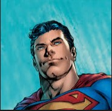
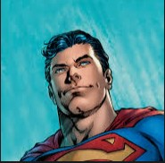

The origins of Modern Heroes differs greatly from that of Ancient Greek Heroes. These heroes are usually either born with powers or inherit them somehow, then use them to fight an antagonist with similar powers.
While Ancient Heroes needed to be dead to be recognized as a hero, the Modern Heroes do not and were almost always given the status of hero during their lifetime.
In addition to the differences in origin, modern heroes are recognized more for the morals they deliver and their self-sacrifice than just their strength alone. These heroes are not worshipped, rather they are celebrated through costumes, movies, and games.
While these heroes are not really, they are remembered for their morals. These heroes can lead to the inference that our modern society values self-sacrifice and putting others before yourself more than just strength alone.